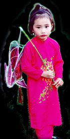
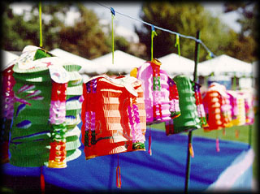

| Mid-Autumn Festival, or Tet Trung Thu,
marks the fifteenth day of the eighth month of the lunar calendar. It is
one of the most popular Vietnamese festivals and is filled with colorful
attractions in celebration of a community's spirit.
Young children from the ages of 4 years old and up participate in dance performances, contribute artwork, and play vital roles in making the Festival an exciting and memorable day. A strong cultural identity will enrich their understanding of their traditions and values. |
 |
 |
The Festival features workshops, innovative ideas, music, sports, arts and crafts, poetry, and various activities that unite children and adults. As the sounds of laughter and music fill the air, the children's lantern processions light up the surroundings. People are absorbed in conversations as they feast on the unique flavors of mid-autumn delicacies such as moon cake, lotus seed paste cake, and mung bean cake ( see pictures from last year's event ). |
| 08:00-12:00 PM | VolleyBall Tournament (10 high school teams) |
| 12:15-01:00 PM | "Lân" Dance |
| 12:15-07:00 PM | Arts & Computer Exhibitions by Au Lac |
| 01:00-04:00 PM | Coloring - Drawing Contests (age 3 - 14)
Essay Contests (age 14-18) |
| 02:30-06:30 PM | Viet Arts Workshop |
| 03:00-05:00 PM | Children's Costume & Talent Contests (age < 15) |
| 04:00-06:00 PM | Multicultural Musical Dance Program:
|
| 05:00-06:30 PM | Martial Arts Demonstration:
|
| 05:00-07:00 PM | VIP Reception |
| 06:00-07:00 PM | Vietnamese Musical Concert
Bon Phuong Band, with Ai Van and Hoai Nam . |
| 07:00-07:25 PM | Ceremony & Acknowledgment |
| 07:25-07:45 PM | Wings-of-the Hundred Viets Dance |
| 07:45-08:15 PM | Lantern Procession |
| 08:15-11:00 PM | Special Variety Program:
|
| Noon -11:00 PM | 10 Food Booths + 12 Game Booths + 28 Craft Booths
Program is subject to change. |